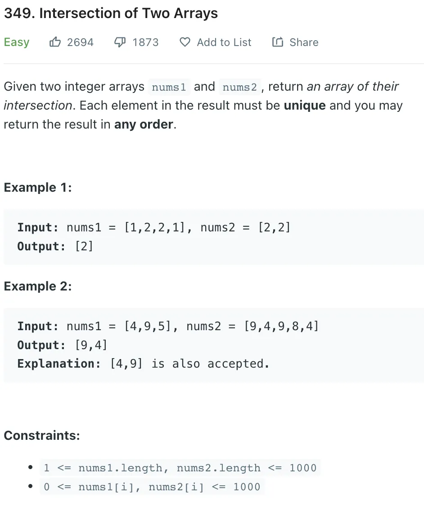

349. Intersection of Two Arrays
考過的公司：Bytedance
Question

✍🏽 My Solution
Runtime: 4 ms, faster than 65.62% of Java online submissions for Intersection of Two Arrays. Memory Usage: 44.6 MB, less than 12.61% of Java online submissions for Intersection of Two Arrays.
class Solution {
public int[] intersection(int[] nums1, int[] nums2) {
HashSet<Integer> set = new HashSet<>();
int n1 = nums1.length;
int n2 = nums2.length;
for (int i = 0; i < n1; i++) {
if (!set.contains(nums1[i])) {
set.add(nums1[i]);
}
}
List<Integer> result = new ArrayList<>();
for (int i = 0; i < n2; i++) {
if (set.contains(nums2[i])) {
set.remove(nums2[i]);
result.add(nums2[i]);
}
}
int[] resultArr = new int[result.size()];
for (int i = 0; i < result.size(); i++) {
resultArr[i] = result.get(i);
}
return resultArr;
}
}
🧠 Thought Process
- Why did I choose this particular implementation?
- 用 HashSet 存儲不重複的nums1的值
- 遍歷nums2，如果存在set裏面，就將數據移除，加入ArrayList
- What is the time/space complexity of my solution? How do I know?
- time: O(n)
- space: O(n)
- What mistakes did I make?
- 忘記如何將ArrayList轉成Array
- 忘記HashSet本身會去重複
Solution #1 [王爭-排序+雙指針]
Explanation (in my words)
- How does their solution work?
- 雙指針遍歷兩個數組
- 要去重，重複的都要往後移動
- What is the space/time complexity of their solution?
- time: O(n log n+ mlogm))
- space: O(1)